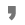

{*** 우측 스크롤 배너 | proc/scroll_banner_right.htm ***}
<div class="quickBtn">
    <!--{ @dataBanner('559008885', true) }--> 
    
	<!--
	<a <!--{ ? .bannerLink }--> href="#none" onclick="winPop('{.bannerLink}'); return false;"<!--{ / }--> class="<!--{ ? strpos(.bannerLink, 'naver.com' ) !== false }-->addQuick<!--{ / }--><!--{ ? strpos(.bannerLink, 'kakao.com' ) !== false }-->addQuick<!--{ / }-->">
        
    </a>
	-->
    
	<!--{ / }-->
    <!-- 
        우측 퀵 SNS 아이콘 영역    href="#none"   #none 부분을 연결링크로 수정
        새창으로 연결시 href="연결링크" target="_blank"  부분을 추가하여 사용하시기 바랍니다.
     -->
	<a href="http://pf.kakao.com/_xjLVcxb" target="_blank"></a>
    <!-- <a href="#none" target="_blank"></a> -->
    <!-- <a href="#none" target="_blank"></a> -->				
    <a href="https://blog.naver.com/china-goods" target="_blank"></a>
    <!-- <a href="#none" target="_blank"></a> -->
    <!-- <a href="#none" target="_blank"></a> -->
    <a href="https://cafe.naver.com/hellomrlee" target="_blank"></a>
	<a href="https://smartstore.naver.com/parkandoh" target="_blank"></a>
</div>